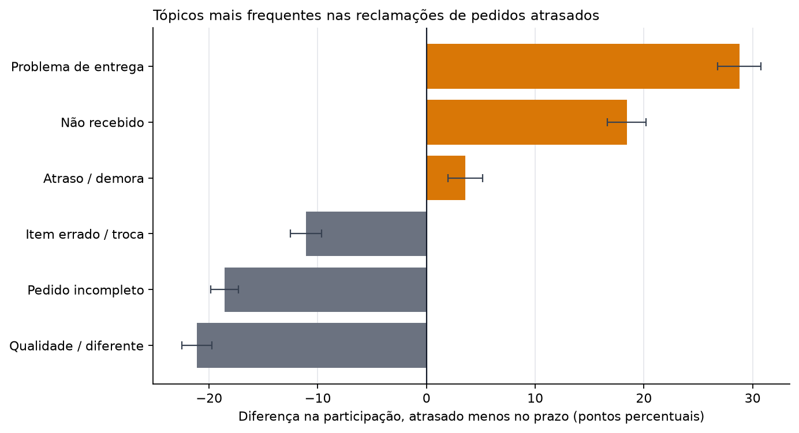

03 · Voz do Cliente
Do que falam 9.139 reclamações escritas, e como os pedidos atrasados diferem
Este é o terceiro projeto sobre o conjunto de dados de e-commerce brasileiro da Olist. O Projeto 01 mediu o atraso na entrega pelo lado do pedido e encontrou ali o sinal mais forte de insatisfação. Este projeto lê o outro lado: o texto em português que os clientes realmente escreveram.
A pergunta é do que os clientes reclamam, e se isso muda quando o pacote chega atrasado. A resposta curta é que muda quase por completo. As reclamações de pedidos atrasados são sobre o pacote. As reclamações de pedidos no prazo são sobre o produto.
Todo número abaixo vem dos modelos testados em projects/01-retail-analytics/dbt_project e é produzido por um único script, projects/03-voice-of-customer/scripts/analyze_reviews.py, que escreve as tabelas e figuras usadas nesta página.
Resumo executivo
- 9.139 reclamações utilizáveis foram escritas com nota 1–2 sobre pedidos entregues: 2.711 de pedidos atrasados e 6.428 de pedidos no prazo.
- As reclamações de pedidos atrasados são quase todas sobre a entrega. Problemas de entrega são 39,8% das reclamações de atrasados contra 11,0% das de pedidos no prazo (+28,8 pp). Não recebimento é 25,9% contra 7,5% (+18,4 pp), e demora é 16,2% contra 12,6% (+3,6 pp). Todos os intervalos excluem zero.
- As reclamações de pedidos no prazo são quase todas sobre o produto. Qualidade ou “diferente do anunciado” é 26,7% das reclamações no prazo contra 5,6% das de atrasados (−21,1 pp). Pedido incompleto é 22,8% contra 4,2% (−18,6 pp), e item errado, defeito ou troca é 19,4% contra 8,3% (−11,1 pp).
- Agrupando os tópicos à mão, a separação fica mais nítida. Os três tópicos de logística somam 81,9% das reclamações de atrasados e 31,1% das de pedidos no prazo. Os três tópicos de produto somam 18,1% das reclamações de atrasados e 68,9% das de pedidos no prazo. Esse agrupamento é um resumo do analista, não uma saída do modelo.
- Isto descreve quem escreveu reclamações, não todos os compradores. Pedidos atrasados são 6,8% das entregas mas 29,7% do corpus de reclamações, porque são mais avaliados e muito mais avaliados mal. O relatório compara a mistura das reclamações, e diz isso antes de mostrar qualquer resultado.
1. Quem está no corpus
Há 99.224 linhas de avaliação, mas a maioria dos pedidos não tem comentário escrito, e os que têm são selecionados pelo desfecho. Restringindo a pedidos entregues e à avaliação mais recente de cada pedido, chega-se à população abaixo.
| Desfecho | Pedidos | Com comentário | Comentários de 1–2 estrelas |
|---|---|---|---|
| No prazo | 89.941 | 35.138 (39,07%) | 6.490 (7,22%) |
| Atrasado | 6.535 | 3.762 (57,57%) | 2.747 (42,04%) |
| Todos os entregues | 96.476 | 38.900 (40,32%) | 9.237 (9,57%) |
A seleção é o primeiro resultado, não uma ressalva acrescentada no final. Um pedido atrasado tem 1,47 vez mais chance de receber uma avaliação escrita do que um pedido no prazo, e uma avaliação de 1–2 estrelas tem 5,8 vezes mais chance. Pedidos atrasados são 6,8% das entregas mas 29,7% das reclamações que podemos ler.
Isso torna duas perguntas diferentes:
- “Que fração dos pedidos atrasados gera reclamação?” é uma pergunta sobre comportamento de avaliação, e este conjunto de dados só a responde para quem escolheu escrever.
- “Entre as reclamações que existem, sobre o que são as de pedidos atrasados?” é uma pergunta sobre o texto, e é a que este projeto responde.
O corpus é a segunda pergunta. Ele contém 9.237 comentários de 1–2 estrelas; 9.139 mantêm ao menos dois tokens após a normalização (98 veredictos de uma palavra como “ruim” ou “péssimo” são descartados). Outras 3.039 avaliações de 1–2 estrelas não têm comentário escrito e nunca entram.
2. Como os tópicos foram construídos
O método é deliberadamente simples e fixado antes de olhar o desfecho.
- Uma avaliação por pedido entregue, a mais recente por
review_created_ate depoisreview_id. É a mesma regra quefct_ordersusa. Juntar as 99.224 linhas de avaliação diretamente duplicaria 547 pedidos e inflaria todos os denominadores. - Manter avaliações de 1–2 estrelas com comentário. A nota é o sinal negativo. O modelo não precisa descobrir sentimento; precisa descrever sobre o que é a reclamação.
- Normalizar de forma conservadora. Minúsculas, remoção de links, dígitos e pontuação, acentos preservados, e remoção de palavras funcionais do português e de nomes de vendedores. A negação fica:
nãoé a diferença entrerecebienão recebi, e removê-la juntou “recebi” e “nunca recebi” em um ajuste anterior. - Ajustar LDA com seis tópicos sobre unigramas e bigramas (
min_df=20,max_df=0,5,random_state=0,max_iter=30). O desfecho de entrega não é entrada; ele é juntado depois que os tópicos são ajustados. - Atribuir cada reclamação ao tópico de maior peso e rotular os tópicos a partir dos termos mais frequentes. O script verifica se cada tópico ainda contém seu termo âncora e falha se uma atualização de biblioteca reordenar os tópicos.
Por que seis tópicos
Seis não foi escolhido pela perplexidade. A perplexidade cai à medida que tópicos são adicionados e é menor em k=8, enquanto a coerência UMass — se os termos principais de um tópico aparecem juntos no corpus — é maior em k=6 entre os sete candidatos testados. A coerência é o critério porque a perplexidade principalmente recompensa distribuir probabilidade sobre palavras frequentes; ela não diz se um tópico é legível.
| Tópicos | Coerência UMass média (10 termos) | Perplexidade |
|---|---|---|
| 4 | −2,699 | 333,05 |
| 5 | −2,699 | 332,39 |
| 6 | −2,677 | 332,92 |
| 7 | −2,691 | 329,96 |
| 8 | −2,745 | 329,04 |
| 9 | −2,850 | 330,69 |
| 10 | −2,833 | 330,43 |
A margem sobre k=4, k=5 e k=7 é pequena: a coerência sozinha não prova que seis é o número verdadeiro, apenas que é o melhor dos candidatos neste corpus e pré-processamento. Os rótulos continuam sendo uma interpretação humana dos termos, e dois pares se sobrepõem: “problema de entrega” e “demora” tratam de entrega, e “não recebido” e “demora” compartilham vocabulário.
Quão estáveis são os tópicos?
Reajustar com outras quatro sementes (1–4) dá um índice Rand ajustado médio de 0,258 contra a partição publicada com semente 0 (faixa 0,234–0,283), e sobreposição Jaccard média dos 10 termos principais de 0,413 (faixa 0,176–0,818 após correspondência um-a-um). Isso é baixo: a partição exata não é estável entre inicializações. Os valores por tópico mostram o que sobrevive e o que não sobrevive:
| Tópico | Jaccard médio dos termos principais entre sementes |
|---|---|
| Qualidade / diferente | 0,255 |
| Não recebido | 0,581 |
| Pedido incompleto | 0,548 |
| Problema de entrega | 0,509 |
| Atraso / longa espera | 0,292 |
| Item errado / troca | 0,292 |
O agrupamento logística/produto é mais robusto que as fronteiras exatas. Em cada semente alternativa, todo tópico de logística tem participação de atrasados entre 27% e 67%, enquanto todo tópico de produto fica entre 6% e 25%. A conclusão principal — reclamações de atrasados tratam da entrega, reclamações no prazo tratam do produto — sobrevive; os seis rótulos específicos e os percentuais exatos não devem ser lidos como categorias fixas.
Reclamações mistas e atribuição dura
O LDA retorna uma distribuição sobre tópicos para cada reclamação; as tabelas acima usam apenas o maior peso. Isso é uma simplificação mensurável: 22,7% das reclamações têm o maior peso abaixo de 0,5, 7,5% abaixo de 0,4, e 31,7% têm um segundo tópico em 0,3 ou mais. A entropia normalizada média é 0,522 numa escala de 0–1. Uma reclamação sobre um pedido atrasado, danificado e incompleto frequentemente tem massa substancial em mais de um tema.
Os rótulos foram verificados lendo as reclamações de maior peso de cada tópico. Os temas são reconhecíveis no texto bruto: danificado ou diferente da foto (qualidade), ainda esperando um mês depois (não recebido), pediu dois e recebeu um (pedido incompleto), prazo vencido ou rastreio diz entregue mas nada chegou (problema de entrega), “quase um mês, outros sites são mais rápidos” (atraso), e voltagem ou item errado sem troca (item errado/troca). Essas paráfrases são evidência qualitativa para os rótulos, não um substituto da comparação quantitativa.
Usar a distribuição completa de tópicos, e não apenas o maior peso, leva à mesma leitura. No corpus, os três tópicos de logística respondem por 75,1% do peso médio das reclamações de pedidos atrasados contra 36,9% das reclamações no prazo; os três tópicos de produto respondem por 24,9% contra 63,1%. As diferenças por atribuição dura na tabela são maiores, mas a direção não depende de forçar cada reclamação em um único tópico.
| Tópico | Termos mais frequentes (após normalização) | Reclamações |
|---|---|---|
| Qualidade ou diferente do anunciado | produto, veio, nao, qualidade, cor, gostei, diferente, quero | 1.866 |
| Problema de entrega (prazo ou transportadora) | produto, entregue, entrega, prazo, dia, chegou, não entregue, não chegou | 1.784 |
| Pedido incompleto (itens faltando) | comprei, recebi, apenas, dois, produtos, pedido, duas, nota | 1.581 |
| Item errado, defeito ou troca | produto, veio, comprei, contato, outro, troca, errado, defeito | 1.475 |
| Atraso e longa espera | produto, estou, recomendo, loja, entrega, não recomendo, compra, aguardando | 1.251 |
| Não recebido (ainda esperando) | recebi, não recebi, produto, ainda, recebi produto, ainda não, nao, produto ainda | 1.182 |
As palavras são evidência do que cada tópico trata, não uma explicação causal. “Correios” aparece no tópico de problema de entrega, mas o conjunto de dados não tem identificador de transportadora, então o tópico não estabelece quem causou o atraso.
3. O que muda quando o pacote atrasa
A comparação é composicional: a participação de cada tópico nas reclamações de atrasados contra sua participação nas reclamações de pedidos no prazo. Os dois denominadores são populações diferentes (2.711 reclamações de atrasados e 6.428 de pedidos no prazo), e a diferença é em pontos percentuais.
| Tópico | Todas as reclamações | Participação em atrasados | Participação em no prazo | Diferença | IC 95% | q (BH) |
|---|---|---|---|---|---|---|
| Qualidade ou diferente do anunciado | 1.866 (20,4%) | 5,6% | 26,7% | −21,1 pp | −22,5 a −19,7 | < 0,001 |
| Problema de entrega (prazo ou transportadora) | 1.784 (19,5%) | 39,8% | 11,0% | +28,8 pp | +26,8 a +30,8 | < 0,001 |
| Pedido incompleto (itens faltando) | 1.581 (17,3%) | 4,2% | 22,8% | −18,6 pp | −19,8 a −17,3 | < 0,001 |
| Item errado, defeito ou troca | 1.475 (16,1%) | 8,3% | 19,4% | −11,1 pp | −12,5 a −9,7 | < 0,001 |
| Atraso e longa espera | 1.251 (13,7%) | 16,2% | 12,6% | +3,6 pp | +2,0 a +5,2 | < 0,001 |
| Não recebido (ainda esperando) | 1.182 (12,9%) | 25,9% | 7,5% | +18,4 pp | +16,7 a +20,2 | < 0,001 |


As reclamações de atrasados são sobre o pacote. Problema de entrega, não recebimento e demora juntos são 81,9% das reclamações de atrasados, contra 31,1% das de pedidos no prazo. A maior diferença isolada é “problema de entrega”, com +28,8 pp. É o que o Projeto 01 encontrou nos carimbos de tempo de entrega, agora dito nas palavras dos próprios clientes: quando um pedido atrasa, a reclamação é sobre a entrega, não sobre a mercadoria.
As reclamações de pedidos no prazo são sobre o produto. Só qualidade ou “diferente do anunciado” é 26,7% das reclamações no prazo. Pedido incompleto é 22,8%, e item errado, defeito ou troca é 19,4%. São 1.715, 1.466 e 1.249 reclamações, respectivamente, e ocorrem em pedidos que cumpriram o prazo. Quem recebe a cor errada, um item faltando ou um produto danificado reclama do produto mesmo quando o pacote chegou na data.
A implicação operacional são duas filas, não uma. Reduzir o atraso removeria a maior fonte de reclamações de atrasados, mas não tocaria nas reclamações de produto e completude que dominam o grupo no prazo. Os dois problemas têm donos e correções diferentes. É uma conclusão mais útil do que uma única nota de sentimento, e só é visível porque o corpus foi dividido por desfecho depois de os tópicos serem ajustados.
4. O que os dados não sustentam
- Nenhuma afirmação causal. Um tópico ser mais comum entre reclamações de atrasados é uma associação entre um desfecho de entrega e o assunto de uma reclamação. Os dados não mostram que o atraso causou uma reclamação específica, e o corpus selecionado torna até a associação descritiva de quem reclama.
- Nenhuma afirmação sobre todos os clientes. 57,6% dos pedidos atrasados têm comentário, contra 39,1% dos pedidos no prazo. Quem escreve não é uma amostra aleatória, e nada aqui estima a mistura de reclamações da maioria silenciosa.
- Nenhuma afirmação sobre experiência positiva. Apenas avaliações de 1–2 estrelas são modeladas. A análise diz do que reclamaram os insatisfeitos, não o que valorizaram os satisfeitos.
- Tópicos são uma simplificação. Seis tópicos, atribuição dura, recursos de saco de palavras, rótulos subjetivos e categorias sobrepostas. A verificação de estabilidade acima mostra que a partição exata não é estável, embora o agrupamento logística/produto seja. Uma reclamação sobre um pedido atrasado, danificado e incompleto é forçada em um único tópico, e 22,7% das reclamações têm o maior peso abaixo de 0,5. Outros valores de k produziriam uma partição diferente, não necessariamente errada.
- Um marketplace e um período. Olist, de setembro de 2016 a outubro de 2018. O vocabulário e a operação de entrega são específicos dele.
- O rótulo é a promessa, não o escaneamento da transportadora.
is_latesignifica que o carimbo de entrega é posterior à data prometida. O conjunto de dados não tem identificador de transportadora, rota nem armazém, então “problema de entrega” não pode ser atribuído a um responsável.
5. Reproduzir
uv run python tasks.py topics # ajusta o modelo, escreve tabelas e figuras
uv run pytest # 29 testes, sem banco de dados nem redeO script lê os modelos construídos, então a ordem no pipeline é load → dbt-build → topics. Ele escreve:
projects/03-voice-of-customer/reports/review_scope.json— escopo e metadados do modelo, incluindo perplexidade e peso médio dos tópicos por desfecho.projects/03-voice-of-customer/reports/topic_terms.csv— os doze termos principais de cada tópico.projects/03-voice-of-customer/reports/topic_prevalence.csv— a tabela acima, com p-valores exatos e limites de confiança.projects/03-voice-of-customer/reports/topic_selection.csv— coerência e perplexidade para k=4–10; o script para se a coerência deixar de escolher k=6.site/reports/03-voice-of-customer/figures/*.png— as duas figuras, em inglês e português.
O modelo é determinístico dada a versão fixada do scikit-learn, a semente e o corpus fixo. As âncoras dos tópicos são verificadas em tempo de execução, então uma atualização de biblioteca que reordene os tópicos faz a tarefa falhar em vez de renomeá-los em silêncio.